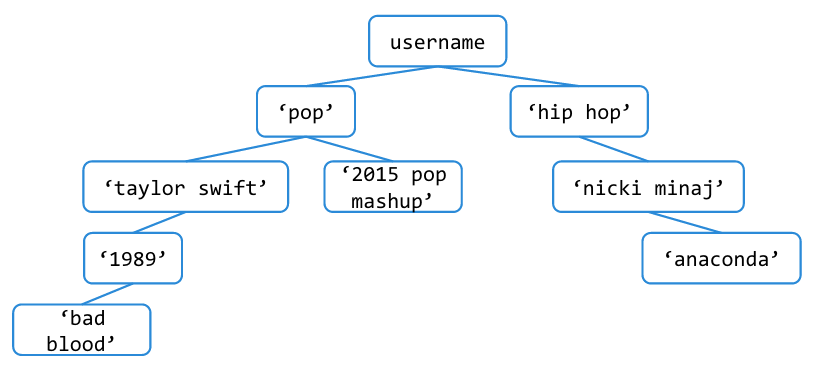

Lab 7: Trees
Due at 11:59pm on 07/14/2015.
Starter Files
Download lab07.zip. Inside the archive, you will find starter files for the questions in this lab, along with a copy of the OK autograder.
Submission
By the end of this lab, you should have submitted the lab with
python3 ok --submit. You may submit more than once before the
deadline; only the final submission will be graded.
- To receive credit for this lab, you must complete Questions 1, 2, 3, and 4 in lab07.py and submit through OK.
- Questions 5 is extra practice. It can be found in the lab07_extra.py file. It is recommended that you complete this problem on your own time.
Trees
A tree is a data structure that represents a hierarchy of information. A
file system is a good example of a tree structure. For example, within your cs61a folder, you have folders separating your projects, lab assignments, and homework. The next level is folders that separate different assignments, hw01, lab01, hog, etc., and inside those are the files themselves, including the starter files and ok. Below is an incomplete diagram of what your cs61a directory might look like.
As you can see, unlike trees in nature, which is where this data structure gets its name from, CS trees are drawn with the root at the top and the leaves at the bottom.
- node: a single unit in a tree.
- entry: the data inside of each tree's root node.
- root: the node at the top of a tree. every tree has one root node.
- subtree: a tree within the main tree, has its own entry and subtrees.
- branch: connects two nodes.
- leaf: a node that has no subtrees.
Our tree abstract data type consists of the entry at its root node and a list of its subtrees. To create a tree and access its entry and subtrees, use the following constructor and selectors:
Constructor
tree(entry, subtrees=[]): creates a tree object with the givenentryand list ofsubtrees.
Selectors
entry(tree): returns the value at the root of thetree.subtrees(tree): returns the list of subtrees of the giventree.is_leaf(tree): returnsTrueiftree's list ofsubtreesis empty, andFalseotherwise.
For example, the tree generated by
t = tree(1, [tree(2),
tree(3, [tree(4), tree(5)]),
tree(6, [tree(7)])])would look like this:
1
/ | \
2 3 6
/ \ \
4 5 7It may be easier to visualize this translation by formatting the code like this:
t = tree(1,
[tree(2),
tree(3,
[tree(4),
tree(5)]),
tree(6,
[tree(7)])])To extract the number 3 from this tree, which is the entry of its second subtree, we would do this:
entry(subtrees(t)[1])The print_tree function prints out a tree in a
human-readable form. The exact form follows the pattern illustrated
above, where the root is unindented, and each of its subtrees is
indented one level further.
def print_tree(t, indent=0):
"""Print a representation of this tree in which each node is
indented by two spaces times its depth from the entry.
>>> print_tree(tree(1))
1
>>> print_tree(tree(1, [tree(2)]))
1
2
>>> print_tree(numbers)
1
2
3
4
5
6
7
"""
print(' ' * indent + str(entry(t)))
for subtree in subtrees(t):
print_tree(subtree, indent + 1)pyTunes
The CS 61A staff has created a music library called pyTunes. pyTunes organizes songs in folders that are labeled by category — in other words, in a tree! The entry at the root of the tree is your account name, which branches out into a hierarchy of categories: genres, artists, and albums, in that order. Songs (leaves in the tree) can be stored at any of these levels. A category cannot be empty (i.e. there will never be a node for a
genre, artist, or album with no subtrees).
Question 1: Create pyTunes
All pyTunes accounts come with the free songs below. Define the function make_pytunes, which takes in username and creates this tree:

The doctest below shows the print_tree representation of a default pyTunes tree.
def make_pytunes(username):
"""Return a pyTunes tree as shown in the diagram.
>>> pytunes = make_pytunes('i_love_t_swift')
>>> print_tree(pytunes)
i_love_t_swift
pop
taylor swift
1989
bad blood
2015 pop mashup
hip hop
nicki minaj
anaconda
"""
"*** YOUR CODE HERE ***"
return tree(username,
[tree('pop',
[tree('taylor swift',
[tree('1989',
[tree('bad blood')])]),
tree('2015 pop mashup')]),
tree('hip hop',
[tree('nicki minaj',
[tree('anaconda')])])])Use OK to test your code:
python3 ok -q make_pytunesQuestion 2: Number of Songs
A pyPod can only hold 10 songs, and you need to find out whether or not all the songs in your pyTunes account will fit. Define the function num_songs, which takes in a pyTunes tree t and returns the number of songs in t. Recall that there are no empty directories in pyTunes, so all leaves in t are songs.
Hint: You can use is_leaf to check whether a given tree is a leaf.
>>> no_subtrees = tree(1)
>>> is_leaf(no_subtrees)
True
>>> is_leaf(tree(5, [tree(3), tree(4)]))
Falsedef num_songs(t):
"""Return the number of songs in the pyTunes tree.
>>> pytunes = make_pytunes('i_love_t_swift')
>>> num_songs(pytunes)
3
"""
"*** YOUR CODE HERE ***"
if (is_leaf(t)):
return 1
return sum([num_songs(s) for s in subtrees(t)])
# Alternate solution
def num_songs(t):
if is_leaf(t):
return 1
leaves = 0
for subtree in subtrees(t):
leaves += num_songs(subtree)
return leavesUse OK to test your code:
python3 ok -q num_songsQuestion 3: Ctrl + F
In order to check if your pyTunes account contains a certain song or category, define the function find. It takes in a pyTunes tree t and returns True if t contains a either a song or a category called target and False otherwise.
def find(t, target):
"""Returns True if t contains a node with the value 'target' and False otherwise.
>>> my_account = tree('kpop_king',
... [tree('korean',
... [tree('gangnam style'),
... tree('wedding dress')]),
... tree('pop',
... [tree('t-swift',
... [tree('blank space')]),
... tree('uptownfunk')])])
>>> find(my_account, 'korean')
True
>>> find(my_account, 'blank space')
True
>>> find(my_account, 'bad blood')
False
"""
"*** YOUR CODE HERE ***"
if entry(t) == target:
return True
if is_leaf(t):
return False
return any([find(s, target) for s in subtrees(t)])
# Alternate solution
def find(t, target):
if entry(t) == target:
return True
for subtree in subtrees(t):
if find(subtree, target):
return True
return FalseUse OK to test your code:
python3 ok -q findQuestion 4: Delete
You also want to be able to delete a song or category from your pyTunes. Define the function delete, which takes in a pyTunes tree t and returns a new tree that is the same as t except with target deleted. If target is a genre, artist, or album, delete everything inside of it. It should not be possible to delete the entire account or root of the tree.
def delete(t, target):
"""Returns the tree that results from deleting target from t. If target is a category,
delete everything inside of it.
>>> my_account = tree('kpop_king',
... [tree('korean',
... [tree('gangnam style'),
... tree('wedding dress')]),
... tree('pop',
... [tree('t-swift',
... [tree('blank space')]),
... tree('uptownfunk')])])
>>> new = delete(my_account, 'pop')
>>> print_tree(new)
kpop_king
korean
gangnam style
wedding dress
"""
"*** YOUR CODE HERE ***"
kept_subtrees = []
for subtree in subtrees(t):
if entry(subtree) != target:
kept_subtrees += [delete(subtree, target)]
return tree(entry(t), kept_subtrees)
# Alternate solution
def delete(t, target):
kept_subtrees = [delete(sub, target) for sub in subtrees(t) if entry(sub) != target]
return tree(entry(t), kept_subtrees)Use OK to test your code:
python3 ok -q deleteExtra Questions
The following questions are for extra practice — they can be found in the the lab07_extra.py file. It is recommended that you complete these problems on your own time.
Question 5: Add Song
Of course, you should be able to add music to your pyTunes. Write add_song to add song to the given category. You should not be able to add a song under a song or to a category that doesn't exist. See the doctests for examples.
def add_song(t, song, category):
""" Returns a new tree with song added to category. Assume the category
already exists.
>>> indie_tunes = tree('indie_tunes',
... [tree('indie',
... [tree('vance joy',
... [tree('riptide')])])])
>>> new_indie = add_song(indie_tunes, 'georgia', 'vance joy')
>>> print_tree(new_indie)
indie_tunes
indie
vance joy
riptide
georgia
"""
"*** YOUR CODE HERE ***"
if entry(t) == category:
return tree(entry(t), subtrees(t) + [tree(song)])
kept_subtrees = []
for sub in subtrees(t):
kept_subtrees += [add_song(sub, song, category)]
return tree(entry(t), kept_subtrees)
# Alternative Solution
def add_song(t, song, category):
if entry(t) == category:
return tree(entry(t), subtrees(t) + [tree(song)])
all_subtrees = [add_song(sub, song, category) for sub in subtrees(t)]
return tree(entry(t), all_subtrees)Use OK to test your code:
python3 ok -q add_song